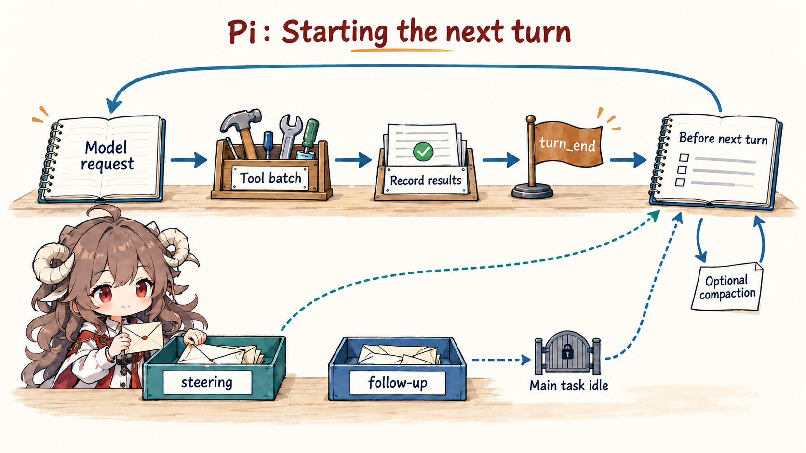
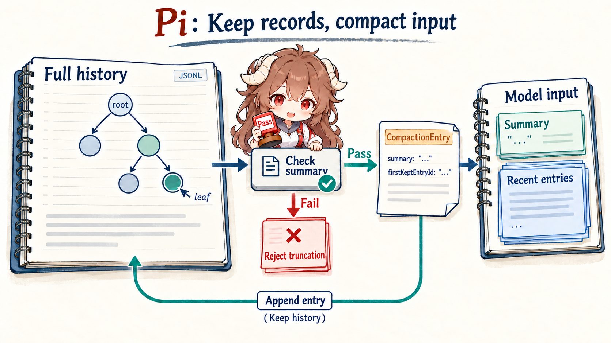

Pi reading route: this chapter establishes the complete runtime map. The context chapter follows a log through preservation, editing, and compaction; the Codemode and MCP chapter follows tool data through a script before it reaches the model. All three are pinned to v1.0.0.
1. Why a Coding Agent cannot be one Model call
Start with a specific task: “make configuration loading asynchronous, then run the tests.” A coding agent may
read files, edit the implementation, execute the test suite, inspect the failure, and revise the patch.
A plain while (tool_call) is already too small a model. Provider output is streaming into the terminal,
tools may finish concurrently, the user may add “do not change the public API” mid-run, and twenty thousand lines
of logs may eventually force context compaction.
Pi calls itself an agent harness, not a prescribed development workflow. Harness is useful here in its mechanical sense: it holds the model, tools, events, and session together while declining to dictate how every team approves commands, plans work, or spawns sub-agents. The harness specifies how the vehicle runs; extensions specify the operating rules for a particular trip.
2. Four responsibilities the Harness keeps
- Connect models: normalize provider messages, tool calls, and streaming output.
- Run the loop: execute a proposed tool step, write the result, and decide whether the model continues.
- Report progress: expose text updates, tool start/end, and turn completion as events.
- Keep sessions: persist messages, tool results, branches, and compaction records for recovery.
Approval prompts, MCP, plan mode, and sub-agents matter, but they sit on those four responsibilities. Extensible does not mean empty; Pi fixes the runtime contract that every usage mode must preserve.
3. How the same refactor reaches completion
- The session assembles the chosen model, file and shell tools, system prompt, and existing history.
- The model requests the config file; the runtime validates and executes the tool, then records the result.
- The model proposes an edit and a test command. Tools may finish concurrently, but results remain paired to calls.
- The user adds “do not change the public API”; that steering message enters before the next model request.
- After a test failure, the model sees the error and repairs the code. The outer session can settle after tool work, queued input, and extension continuation are resolved; task acceptance remains separate.
- A follow-up enters after tools and steering drain; extensions can also append records and request continuation. Under context pressure, the model sees a summary plus recent records.
- The original records remain in the session tree, so the user can branch, recover, or inspect an older path.
These seven steps establish the complete route. runLoop, the JSONL tree, and Compaction later identify the
component responsible for each step and the condition it must preserve.
Keep the two “trees” separate.
Pi's session tree preserves conversation records such as messages, tool results, model changes, and summaries.
Git branches or worktrees preserve file versions. Completed edit, bash, and external API
side effects do not roll back when /tree moves to an older leaf. Safe alternative implementations still
need a Git worktree, sandbox, idempotent tools, or an extension-owned approval policy.
Questions this article answers. This chapter tracks one question: what must Pi's minimal core implement, and which policies does it deliberately leave to extensions? By the end, you should be able to replay a request through model calls, tool results, queued input, persistence, branching, and Compaction, then explain why the stored Session and the current Model input are not the same thing.
Source scope.
Source links are pinned to the Pi 1.0.0 release snapshot a13d35a742c6ef8462812a28fbe1d8c8b7431c32.
Terms such as Harness, stored Session, and current Model input summarize responsibilities visible in public source.
Closed provider behavior, third-party extension policy, and sandbox internals remain outside the claims here.
The whole chapter can first be reduced to one execution route:
User: "Make config loading async, then run tests"
-> AgentSession: assemble model, tools, system prompt, resources, SessionManager
-> SessionManager: rebuild input from branch, compaction, and context_edit
-> agent-core: prepareRequest -> transformContext -> convertToLlm -> provider stream
-> assistant message: text / thinking / toolCall
-> tool batch: validate -> beforeToolCall -> execute -> afterToolCall
-> AgentEvent: message_update / tool_execution_* / turn_end
-> SessionManager: append messages, tool results, and model changes to a JSONL tree
-> next turn: drain steering first; drain follow-up after tools and steering are empty
-> context pressure: append CompactionEntry; model sees summary + recent entries
-> /tree navigation: move leaf; optionally append BranchSummaryEntryThis is not literal TypeScript. It names the handoffs the following sections will make precise. The two important verbs are append and select: the stored Session primarily appends records, while each Model request assembles Context from the current Leaf, Compaction cutoff, context edits, and message conversion rules.
| Three views of one session | How it is built | Who consumes it | What may be omitted |
|---|---|---|---|
| Stored Session records | JSONL appends every entry, including old branches, custom entries, and compaction records. | SessionManager, /tree, recovery, and audit. |
Normal context pressure does not require deleting old entries. |
| Active branch | Walk from the current leafId through parentId to the root. |
Session navigation, fork/clone, and context rebuild. | Other branches remain durable but do not belong to the current path. |
| Current Model input | Apply compaction boundaries, context_edit, transformContext, and convertToLlm to the active branch. |
The next provider request. | UI-only entries may be filtered and old work may be summarized; tool-call/result pairing must remain valid. |
4. Four source layers, not one giant Agent class
4.1 Each layer handles one class of problem
This chapter follows four layers of the local coding harness:
pi-ai, pi-agent-core, pi-coding-agent, and pi-tui. The repository also contains Chord, telemetry, and durable packages; these four layers describe the path examined here, not the complete monorepo inventory.
A first-time reader can ignore the package names and ask four questions instead: who normalizes provider messages,
who loops between model and tools, who owns coding-agent files and sessions, and who renders runtime events.
| Layer | What it owns | What it does not decide | First source |
|---|---|---|---|
pi-ai |
Models, providers, content blocks, tool schemas, usage, and streaming assistant events. | It does not select coding tools or persist a session tree. | Provider / Models |
pi-agent-core |
Agent state, turn events, model calls, tool batches, and steering/follow-up queues. | It does not know what a file tool looks like or where sessions live. | Message and event contracts |
pi-coding-agent |
read/bash/edit/write, system prompt, resources, sessions, compaction, extensions, and run modes. | It does not make the TUI the only entry point or bind the product to one provider. | createAgentSession |
pi-tui / modes |
Interactive terminal, print/JSON, RPC, and SDK-facing presentation surfaces. | The interface consumes the runtime; it does not reimplement the loop. | Four entry modes |
This layering yields a useful distinction. Pi's product is a terminal coding agent, but its reusable runtime is not
the terminal. The SDK constructs an AgentSession directly. RPC encodes commands, acknowledgements, and
events as line-delimited JSON. Both reuse the same agent and session path.
The
SDK contract
and
RPC framing
are different shells over that route.
Harness here names the coding-agent product and its responsibilities, not a required class named AgentHarness. Version 1.0 removed the old experimental AgentHarness interfaces from agent-core. The separate pi-durable package remains experimental, and source-only client/server work is outside the default distribution. The local JSONL path below has not thereby migrated to a durable service.
4.2 Minimal does not mean completion adapter
A core that merely forwards text to a model cannot explain why a tool result still matches its originating call, when mid-run user input becomes visible, or how a restarted process resumes the same branch. Pi keeps those responsibilities in core because they determine replayability. Whether every shell command gets a confirmation dialog, or the entire process runs in a container, belongs to the deployment's policy.
Pi's core boundary: keep one agent run coherent across messages, events, tool results, and recoverable records; do not prescribe one workflow or one security interaction for every environment.
5. A Turn is not a Completion: follow runLoop
5.1 The Model proposes one step; the Runtime repeats as needed
Return to the async configuration task. The first model response may request read, the second may contain
edit and bash, and only the third may produce a final answer. The model does not own the whole
while loop. It hands one step back through stopReason and typed content blocks.
The normal tool path has five steps; errors, cancellation, and explicit stops have separate exits:
- Inject pending input and reconstruct effective context in
prepareRequestfor each request. - Call the provider and stream a complete assistant message.
- Finish any tool batch and record its results.
- Call
finishTurnto choose default scheduling, continuation, or ending; then emit the low-levelturn_end. - Process requests caused by tools, steering, and follow-up. With no further request or continuation, emit the low-level
agent_end.
These are the inner and outer loops in
runLoop:
the inner loop handles tools and steering, while the outer loop lets an otherwise completed agent accept follow-up work.
A low-level agent_end ends that segment of the loop.AgentSession can still recover from an error or run agent_before_settle, where extensions may add records and continue. The event therefore establishes neither whole-session idleness nor task quality. Even after tests improve from exit code 1 to 0, a diff check must confirm that the public API is preserved before CI or the user accepts the result.

prepareNextTurn can refresh context, model, and thinking. Before every provider call, prepareRequest reconstructs effective messages from SessionManager. The coding harness accounts for new tool results and compacts if needed. Steering arriving during preparation is polled again. See request reconstruction.
finishTurn returning continue ensures another model request. A request already caused by tools, steering, or follow-up satisfies it without adding a duplicate. end ends the current low-level run without consuming queues. Errors and aborts remain hard exits regardless of continue. The coding-agent turn_end and agent_before_settle hooks can also return record drafts for preview, validation, and ordered persistence. See the context chapter and agent loop.
5.2 Tools may finish concurrently while results stay paired and ordered
Suppose one response asks to read two unrelated files. Pi can execute those calls in parallel, but completion order
is not assistant source order. A fast tool may emit tool_execution_end first, while tool-result messages
still enter context in the order the assistant requested them. The UI gets timely progress without destabilizing the
call-result pairing seen by the next model request.
The implementation performs argument validation and beforeToolCall preflight sequentially, runs allowed
calls concurrently, then uses the original array order when emitting result messages. If configuration sets toolExecution: "sequential" or any target tool declares
executionMode: "sequential", the whole batch uses sequential execution. After interrupted parallel preflight, prepared calls check abort again before starting, avoiding new side effects after cancellation.
See
executeToolCalls.
Live event order
tool A start
tool B start
tool B end
tool A endThis reflects actual progress for the UI.
Model ledger order
assistant: [A, B]
toolResult: A
toolResult: BThis keeps call-result correlation stable.
Output truncation is another important failure boundary. A best-effort JSON parser can sometimes turn incomplete streamed arguments into apparently valid data. When an assistant response stops at the output limit, Pi refuses to execute every tool call from that response and returns explicit errors so the model can issue complete calls. The truncated-call path protects side-effect integrity, not merely parser success.
5.3 Steering and follow-up are different scheduling promises
While tests run, “do not change the public API” is steering. The current assistant turn and its already-issued tool calls finish normally; the new instruction enters before the next model call. “After that, add a changelog entry” is follow-up. It becomes eligible only after the original task has no more tools or steering to process.
This boundary prevents two misreadings. Steering does not erase a running tool, and follow-up does not preempt the
main task. The low-level contract lives in
getSteeringMessages and getFollowUpMessages;
the terminal maps Enter and Alt+Enter onto the two queues.
6. AgentMessage is not a Provider message
6.1 Runtime history may contain records the model should never see
The agent layer uses extensible AgentMessage values. Coding-agent first reconstructs the current branch and compaction range, applies content edits, and supplies those messages to the agent layer. Mutating agent.state.messages alone does not persistently change future input: prepareRequest rereads session records. Optional transformContext and required convertToLlm then handle request-time conversion:
SessionManager.buildSessionProjection()
-> prepareRequest()
-> AgentMessage[]
-> transformContext() // compact, prune, or inject external context
-> AgentMessage[]
-> convertToLlm() // filter UI-only items, convert custom messages
-> provider Message[]
This boundary is explicit in
streamAssistantResponse.
Presence in the session does not imply presence in the next model request. A plain extension CustomEntry
can persist a counter without entering context; CustomMessageEntry is the explicit model-visible form.
The tool set also becomes replayable history. Before each model request, declareToolChanges compares tools already declared in the transcript with the executable set and records toolsAdded / toolsRemoved on a system message. If an extension removes bash, subsequent requests see that removal instead of trusting the old catalog. Changing only the in-memory tool array would not explain the transition.
An extension can append context_edit to replace a recorded log’s content or omit its message in future input, while preserving the raw entry. Resuming the same branch replays the decision. The request-time context hook edits non-system messages and restores system messages afterward; context_with_system receives the complete list and its output is used verbatim. See the context chapter for persistent edits versus transient transforms.
6.2 Provider differences stop in pi-ai
Anthropic, OpenAI Responses, OpenAI-compatible chat, and Google expose different wire shapes, while the loop consumes
one AssistantMessageEventStream. At stream start, a partial assistant message enters context. Text,
thinking, and tool-call deltas replace that partial value. Done or error finalizes it. From the upper layer's view,
changing providers does not change the message_start → message_update → message_end lifecycle.
The value of pi-ai is therefore not just a long model list. It decouples the tool loop from provider
payloads. This adapter boundary becomes a baseline for the general-purpose frameworks later in the series, while Pi
publishes it as a reusable package. A coding-agent extension can also add a provider or override an endpoint through
registerProvider.
6.3 A request can select a different physical model
Experimental virtual models let an extension route a selected virtual model to an actual provider, model, and thinking setting per request. The session retains the virtual selection while assistant records identify the physical model; routing state can persist along the branch. A smaller physical context window triggers checks against that model. Switching can affect cache reuse and message compatibility, so routing capability alone establishes no cost or quality gain. Compare actual outcomes and usage on the same task.
7. A Session is a JSONL tree, not a chat array
7.1 id + parentId + leaf turns rewind into pointer movement
Linear chat arrays struggle with /tree. If a user rewrites turn ten, should later answers be deleted,
copied to another file, or left mixed into the array? Pi uses an append-only tree. Every entry has id and
parentId; leafId marks the current position. Following parents from leaf to root yields the
active branch.
{"type":"message","id":"m1","parentId":null,"message":{"role":"user","content":"make it async"}}
{"type":"message","id":"m2","parentId":"m1","message":{"role":"assistant","content":[...]}}
{"type":"message","id":"m3","parentId":"m2","message":{"role":"toolResult",...}}
{"type":"message","id":"b1","parentId":"m1","message":{"role":"user","content":"keep a sync compatibility layer"}}
This is a simplified shape, not a full session file. m3 and b1 continue along different
paths without rewriting old records. SessionManager.branch() only moves the leaf to an older entry;
the next append naturally becomes a new child.
Tree construction and branching
make this invariant explicit.
7.2 /tree, /fork, and /clone solve different problems
| Operation | Record change | Best use |
|---|---|---|
/tree |
Stay in one JSONL file, move the leaf, optionally summarize the branch being left. | Try another implementation while preserving both paths. |
/fork |
Copy the selected active path into a new session and return the old user prompt to the editor. | Start an independent experiment from an earlier request. |
/clone |
Copy the current active path into a new session with an empty editor. | Keep current context while splitting future work. |
One /tree detail is easy to reverse. If the user asks to summarize the branch being left,
navigateTree() finds the common ancestor, collects entries from the old path, and generates a summary.
That BranchSummaryEntry is attached at the new navigation position, not after the abandoned leaf.
Future turns on the new path can know what the alternative explored without replaying the entire old branch.
See
navigateTree.
8. Compaction shortens current Model input without deleting stored history
8.1 First find a cut that does not separate a Tool Call from its result
When usage exceeds contextWindow - reserveTokens, or the user invokes /compact, Pi reconstructs effective input before selecting a retention range. Applied context edits affect summary material and size estimates. An old log does not reenter the summary merely because it remains in JSONL. The runtime tries to retain keepRecentTokens, while avoiding a cut on a tool result that would leave it orphaned.
Cuts must respect message roles and complete turns. A turn exceeding the retention budget may have its early prefix summarized separately. Large trailing tool results retain their preceding assistant call. keepRecentTokens is approximate. Current preparation uses findProjectedCutPoint to select entries by their actual message contributions, including records that contribute no model content.
8.2 Summary generation checkpoints model context
The default path performs four separate operations:
- Take summary material from effective, edited messages; convert custom messages and serialize role-labeled text.
- Truncate very large tool results so the summarization request does not overflow itself.
- Require Goal, Constraints, Progress, Decisions, Next Steps, and Critical Context without continuing the conversation.
- Accumulate read/write/edit file paths and append them as structured summary markers.
These responsibilities live in
serializeConversation
and
generateSummaryWithUsage.
The output is not a polished retrospective. It is a textual checkpoint from which another model can continue
reasoning. It restores the model-visible view, not workspace files, background processes, tool-internal state, or
external side effects that have already occurred.
The model call itself has a narrower contract than a normal agent turn:
summary request (shape-level)
system = SUMMARIZATION_SYSTEM_PROMPT
user = <conversation>serialized history</conversation>
+ optional <previous-summary>
+ initial or update summary instructions
tools = none
maxTokens = min(floor(0.8 * reserveTokens), positive model.maxTokens or infinity)
reasoning = forwarded only when the model supports it and thinkingLevel is enabled
summary response
-> stopReason == error or length: fail without installing compaction
-> toolCall output: fail without execution or installation
-> check cancellation again before installation
-> join text blocks only
-> runtime appends file markers and creates CompactionEntry
The old conversation is not handed back to the normal agent loop, and the summarization request exposes no tools.
The model produces context-checkpoint text; the compaction runtime still owns firstKeptEntryId, token boundaries,
file markers, and entry installation. “Generate a summary” and “replace part of model view” are separate operations. The default path rejects truncated summaries and unexpected tool calls, then checks cancellation again before installation. Transient network failures can follow the configured retry policy; cancellation and deterministic failures are not hidden by repeated calls. See summary failure and retry handling.
8.3 Append a new Entry, then rebuild the next Model input
After summary generation, AgentSession appends CompactionEntry { summary, firstKeptEntryId, tokensBefore, details } and refreshes state with buildSessionProjection(). Old messages remain in JSONL. New input includes a system checkpoint, the latest summary, effective retained messages, and later records; content edits still participate. The shape below omits unrelated metadata:
persistent JSONL:
M1 -> A1 -> T1 -> M2 -> A2 -> T2 -> C1
C1 = {
type: "compaction",
summary: "...",
firstKeptEntryId: "M2",
tokensBefore: 48210,
systemMessage: { role: "system", content: "...", ... }
}
next model-visible view:
[systemCheckpoint(C1), compactionSummary(C1), M2, A2, T2]
This differs from replacing an old array with a summary. Direct replacement destroys omitted evidence. Pi's
compaction is a lossy projection, but the durable history remains navigable through /tree.
Persistence and rebuild happen in
AgentSession.compact;
projection rules live in
buildContextEntries.

8.4 Automatic recovery and repeated Compaction have separate stopping conditions
Automatic compaction separates proactive headroom from interrupted-run recovery. Threshold compaction does not rerun a completed response. Overflow recovery can follow a context overflow or a recoverable length stop: the failed or truncated assistant message is removed from retry input, retained in session history, and followed by at most one compact-and-retry attempt. A response that completed successfully is compacted without retry. Missing provider usage can be estimated from message size; stale pre-compaction usage cannot immediately trigger another compaction.
_checkCompaction selects the recovery reason, while _runAutoCompaction performs and installs it. Waiting steering/follow-up messages can continue after compaction.
Repeated compaction starts from the current reconstructed input, which already contains the old summary and retained tail. The next summary absorbs later progress without rereading all raw entries. After context_edit or compaction changes input, older assistant usage no longer describes its current size; estimateProjectedContextTokens estimates effective messages again. Failed assistant messages are also omitted through persistent context edits, keeping retry input consistent after resume. See prepareCompaction and the context chapter.
9. Where Extensions can intervene in a Run
9.1 Built-in capabilities can enter through extensions
At v1.0.0, MCP, codemode, and tool_search are built-in extensions. MCP connects servers and discovers tools. Codemode lets a model combine calls and filter results with JavaScript. Tool search loads selected declarations for subsequent requests. These add product capabilities without moving every behavior into agent-core. Follow the data flow in the Codemode and MCP chapter.
Extensions can register tools, commands, providers, and MCP servers, and handle model, tool, and session events. turn_end and agent_before_settle can return record drafts and request continuation. Planning, sub-agent orchestration, and permission interactions remain extension choices. Product defaults and core loop behavior live at different layers.
| Capability | Runtime gate | Invariant it must preserve |
|---|---|---|
| Dangerous-command approval | tool_call / beforeToolCall |
A blocked call becomes an explicit tool result rather than vanishing. |
| Custom compaction | session_before_compact |
Summary, first-kept entry, and token boundary still support reconstruction. |
| Plan mode / sub-agent | Custom tool, message, entry, command, and events | Child work returns through agent messages and session records. |
| MCP and scripted tool orchestration | Built-in MCP, codemode, and tool_search; replaceable by extensions. | Nested calls retain tool hooks; discovery and declarations follow explicit rules. |
| New provider | registerProvider / custom stream |
Upper layers still consume unified assistant events. |
9.2 Skills are on-demand instructions; Extensions are executable runtime code
These two mechanisms should not be collapsed. A Skill uses SKILL.md to describe instructions, steps,
and resources. Pi places its name and description into the system prompt and lets the model read the body on demand.
An Extension is TypeScript running inside the Pi process; it can register tools, rewrite events, and persist state.
Skill metadata validation
and
formatSkillsForPrompt
show progressive disclosure; extension code has full process authority.
A third-party Pi Package is therefore not safe merely because it looks like a customization bundle. One package may contain extensions, skills, prompts, and themes; extension code can execute side effects, while skills can direct the model toward them. Source review is the supply-chain cost of an extension-first architecture.
10. Project trust is not a Sandbox
10.1 Loading project resources and approving each tool call are separate gates
Project trust controls protected resources such as project settings, MCP configuration, extensions, skills, prompts, themes, and system-prompt files. A decision is required by default, subject to saved choices, CLI overrides, and extensions. It prevents silent extension loading, not tool actions after startup. The security documentation lists two exceptions: project sessionDir is read before trust resolution; context files such as AGENTS.override.md, AGENTS.md, and CLAUDE.md load regardless of trust unless context loading is disabled.
beforeToolCall and the extension tool_call event can block execution, and coding-agent wires
that extension hook into agent-core preflight. The default product still does not ship an AgentScope-style
allow/deny/ask policy. Without a custom gate, read, write, edit, and bash inherit the permissions of the user and
process that launched Pi.
10.2 Real isolation belongs to the process or tool environment
Pi documents three patterns: put the whole process in Docker; put it in a policy-controlled environment such as
OpenShell; or keep Pi and provider credentials on the host while a Gondolin extension routes built-in tools and
! commands into a micro-VM. These patterns isolate different owners. In the third pattern, custom
extension tools still run on the host unless they also delegate their operations.
The
containerization table
makes that boundary explicit.
Do not mistake a pluggable gate for an enabled security policy. Pi exposes interception points, but its default permission boundary remains the operating-system user. Project trust governs resource loading only.
11. Decide by responsibility, not by feature count
| Engineering pressure | What Pi core owns | What you still decide | Failure boundary |
|---|---|---|---|
| Multi-provider coding agent | Unified streaming messages, tool calls, usage, thinking, and error contracts. | Model policy, credentials, proxies, and provider extensions. | A custom provider must preserve the stream contract. |
| Long-running tool work | Events, concurrent tool batches, steering/follow-up, abort, and retry hooks. | Which tools may run together and which side effects require approval. | No per-call permission dialog is enabled by default. |
| Recoverable exploration | Append-only JSONL tree, leaf, fork/clone, and branch summary. | When to switch branches and whether to summarize the abandoned path. | Summary is lossy; the raw ledger remains. |
| Context-window pressure | Safe cuts, structured summaries, CompactionEntry, and overflow retry. | Budgets, model choice, and custom summarization policy. | Cutting between a tool call and result is explicitly forbidden. |
| Team-specific workflow | Extensions, Skills, packages, and SDK/RPC embedding surfaces. | Planning, sub-agents, MCP exposure and authentication, permissions, and isolation policy. | Extension code and skills enter the same trust boundary and require review. |
Pi is not Hermes Agent, nor is it a general business framework centered on crews, workflow graphs, or a service control plane. It is first a coding agent harness, with provider, agent-core, and session runtime published as embeddable packages. Its place in this series is the missing coordinate: a framework can be defined by a few stable owners and deep extension gates, not only by adding more built-in features.
The next chapter turns to AgentScope. Pi first fixes the minimal route through providers, the agent loop, tool batches, events, and sessions. AgentScope then asks who owns structured content, permission prompts, pause and resume, external execution, and service sessions when an agent enters a real product. Establishing what core cannot omit makes those added runtime responsibilities visible.